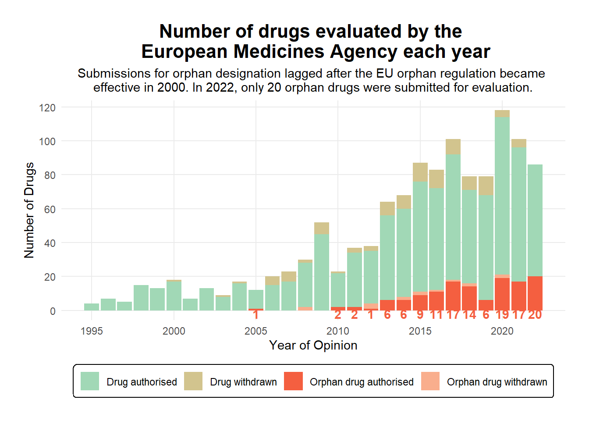
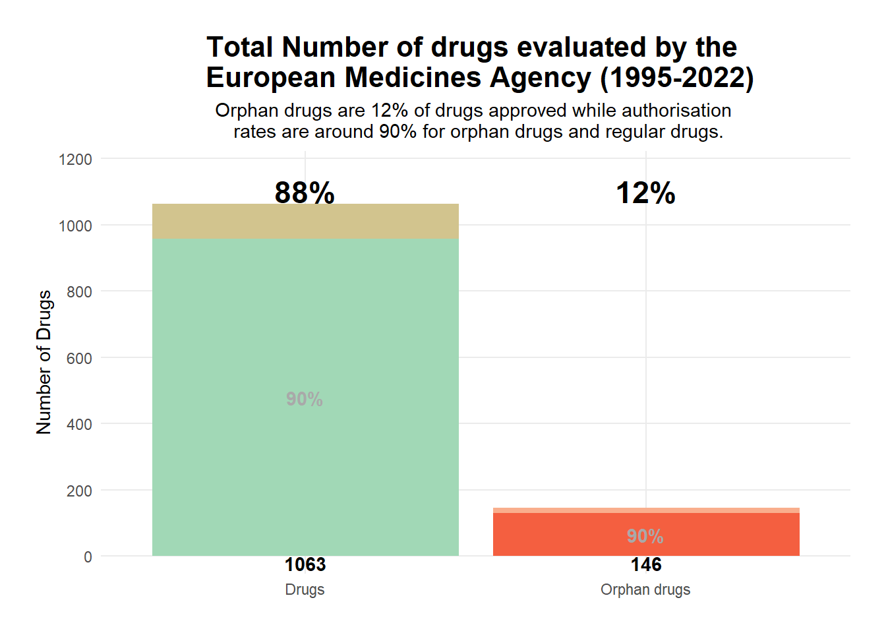
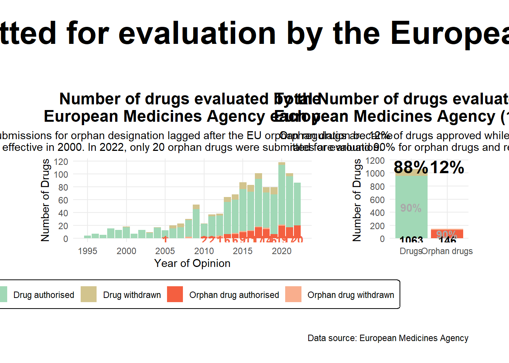

Code
# devtools::install_github("teunbrand/elementalist")
library(scales)
library(ggridges)
library(tidyverse)
library(paletteer)
library(patchwork)
library(elementalist) Hippolyte Menou
This analysis explores drug development and approval patterns in Europe, focusing particularly on orphan drugs - medicines developed specifically for rare diseases. The data comes from the European Medicines Agency (EMA) via Miquel Anglada Girotto on GitHub. Miquel wrote about his exploration of the data.
We used the source table of all EPARs for human and veterinary medicines, rather than Miquel’s scraped data. It includes information about drug authorizations, therapeutic areas, and timelines from 1995 to 2022.
After loading necessary visualization and data manipulation libraries, we import the dataset from TidyTuesday’s repository. The data originates from the European Medicines Agency’s table of all EPARs (European Public Assessment Reports) for human and veterinary medicines.
Rows: 1,988
Columns: 28
$ category <chr> "human", "human", "human",…
$ medicine_name <chr> "Adcetris", "Nityr", "Ebva…
$ therapeutic_area <chr> "Lymphoma, Non-Hodgkin; H…
$ common_name <chr> "brentuximab vedotin", "ni…
$ active_substance <chr> "brentuximab vedotin", "ni…
$ product_number <chr> "002455", "004582", "00457…
$ patient_safety <lgl> FALSE, FALSE, FALSE, FALSE…
$ authorisation_status <chr> "authorised", "authorised"…
$ atc_code <chr> "L01XC12", "A16AX04", NA, …
$ additional_monitoring <lgl> FALSE, FALSE, TRUE, TRUE, …
$ generic <lgl> FALSE, TRUE, FALSE, FALSE,…
$ biosimilar <lgl> FALSE, FALSE, FALSE, FALSE…
$ conditional_approval <lgl> FALSE, FALSE, FALSE, FALSE…
$ exceptional_circumstances <lgl> FALSE, FALSE, TRUE, FALSE,…
$ accelerated_assessment <lgl> FALSE, FALSE, FALSE, FALSE…
$ orphan_medicine <lgl> TRUE, FALSE, TRUE, FALSE, …
$ marketing_authorisation_date <date> 2012-10-25, 2018-07-26, 2…
$ date_of_refusal_of_marketing_authorisation <date> NA, NA, NA, NA, NA, NA, N…
$ marketing_authorisation_holder_company_name <chr> "Takeda Pharma A/S", "Cycl…
$ pharmacotherapeutic_group <chr> "Antineoplastic agents", "…
$ date_of_opinion <date> 2012-07-19, 2018-05-31, 2…
$ decision_date <date> 2022-11-17, 2023-03-10, 2…
$ revision_number <dbl> 34, 4, 2, 3, 30, 24, 4, 18…
$ condition_indication <chr> "Hodgkin lymphomaAdcetris …
$ species <chr> NA, NA, NA, NA, NA, NA, NA…
$ first_published <dttm> 2018-07-25 13:58:00, 2018…
$ revision_date <dttm> 2023-03-13 11:52:00, 2023…
$ url <chr> "https://www.ema.europa.eu…Looking at the therapeutic areas for human drugs with authorized status, we can see the distribution of drug development across different medical fields. This helps us understand where pharmaceutical research and development efforts have been concentrated.
# A tibble: 670 × 2
therapeutic_area n
<chr> <int>
1 <NA> 285
2 Diabetes Mellitus, Type 2 73
3 HIV Infections 71
4 Hypertension 47
5 Diabetes Mellitus 37
6 Pulmonary Disease, Chronic Obstructive 30
7 Hepatitis C, Chronic 22
8 Multiple Myeloma 22
9 Parkinson Disease 20
10 Carcinoma, Non-Small-Cell Lung 19
# ℹ 660 more rowsWe examine the time between opinion date and decision date for non-generic, non-biosimilar human drugs. The violin plot comparison between orphan and non-orphan medicines reveals the variation in approval timelines, highlighting potential differences in the review process for these categories.
For our main analysis, we create two complementary visualizations using Jack Bush’s color palette to explore orphan drug development over time:
<colors>
#A1D8B6FF #D2C48EFF #F45F40FF #F9AE8DFF #80B9CEFF theme_set(theme_minimal())
theme_update(
# Legend Styling
legend.title = element_blank(),
legend.position = "none",
# Title Styling
plot.title = element_text(hjust = 0.5, face = "bold", size = 16),
plot.subtitle = element_text(hjust = 0.5),
#
panel.grid.minor = element_blank(),
# Margins
plot.margin = margin(t = 20, r = 20, b = 20, l = 20),
)orphan_drugs_years <- drugs %>%
mutate(year = year(date_of_opinion)) %>% # date_of_opinion, decision_date, first_published, marketing_authorisation_date, revision_date
filter(!is.na(year)) %>%
group_by(orphan_medicine, authorisation_status) %>%
count(year) %>%
mutate(authorisation_status = if_else(authorisation_status=="authorised", T, F),
approved_orphan = case_when(
orphan_medicine & authorisation_status ~ "Orphan drug authorised", # TRUE/TRUE
orphan_medicine & !authorisation_status ~ "Orphan drug withdrawn", # TRUE/FALSE
!orphan_medicine & authorisation_status ~ "Drug authorised", # FALSE/TRUE
!orphan_medicine & !authorisation_status ~ "Drug withdrawn" # FALSE/FALSE
) %>% factor(levels=c("Drug withdrawn", "Drug authorised", "Orphan drug withdrawn", "Orphan drug authorised")))
orphan_drugs_years# A tibble: 82 × 5
# Groups: orphan_medicine, authorisation_status [4]
orphan_medicine authorisation_status year n approved_orphan
<lgl> <lgl> <dbl> <int> <fct>
1 FALSE TRUE 1995 4 Drug authorised
2 FALSE TRUE 1996 7 Drug authorised
3 FALSE TRUE 1997 5 Drug authorised
4 FALSE TRUE 1998 15 Drug authorised
5 FALSE TRUE 1999 13 Drug authorised
6 FALSE TRUE 2000 17 Drug authorised
7 FALSE TRUE 2001 7 Drug authorised
8 FALSE TRUE 2002 13 Drug authorised
9 FALSE TRUE 2003 8 Drug authorised
10 FALSE TRUE 2004 16 Drug authorised
# ℹ 72 more rowsorphan_years_plot <- orphan_drugs_years %>%
ggplot(aes(x=year, y=n, fill=approved_orphan)) +
geom_col() +
scale_fill_manual(values=jack_bush_palette, breaks=c("Drug authorised", "Drug withdrawn", "Orphan drug authorised", "Orphan drug withdrawn")) +
scale_x_continuous(breaks=seq(1995, 2020, 5)) +
scale_y_continuous(breaks=seq(0, 120, 20)) +
# Number below horizon
geom_text(data = orphan_drugs_years %>% filter(approved_orphan == "Orphan drug authorised"), aes(label=n), colour="#F45F40FF", y = -2, fontface="bold") +
labs(x = "Year of Opinion",
y = "Number of Drugs",
title = "Number of drugs evaluated by the \n European Medicines Agency each year",
subtitle = "Submissions for orphan designation lagged after the EU orphan regulation became \neffective in 2000. In 2022, only 20 orphan drugs were submitted for evaluation.",
# caption = "Data source: European Medicines Agency",
) +
theme(
# Legend Styling
legend.position = "bottom",
legend.box.background = element_rect_round(fill = "white", colour = "black"),
)
orphan_years_plot
# A tibble: 4 × 6
orphan_medicine approved_orphan total n perc perc2
<lgl> <fct> <int> <int> <dbl> <dbl>
1 FALSE Drug withdrawn 105 1063 0.1 0.88
2 FALSE Drug authorised 958 1063 0.9 0.88
3 TRUE Orphan drug withdrawn 15 146 0.1 0.12
4 TRUE Orphan drug authorised 131 146 0.9 0.12orphan_total_plot <- orphan_drugs_summary %>%
ggplot(aes(x = orphan_medicine, y = total, fill = approved_orphan)) +
geom_col() +
# Number below the horizon
geom_text(data = orphan_drugs_summary %>% filter(approved_orphan %in% c("Orphan drug authorised", "Drug authorised")), aes(label=n), y=-20, fontface="bold", colour="black") +
# Percentage of approval
geom_text(data = orphan_drugs_summary %>% filter(approved_orphan %in% c("Orphan drug authorised", "Drug authorised")), aes(label=percent(perc)), position = position_stack(vjust = .5), colour="darkgray", fontface="bold") +
# Percentage of orphan drugs total
geom_text(data = orphan_drugs_summary %>% filter(approved_orphan %in% c("Orphan drug authorised", "Drug authorised")), aes(label=percent(perc2)), y=1100, fontface="bold", size=6) +
scale_fill_manual(values=jack_bush_palette, breaks=c("Drug authorised", "Drug withdrawn", "Orphan drug authorised", "Orphan drug withdrawn")) +
scale_x_discrete(labels = c("FALSE" = "Drugs", "TRUE" = "Orphan drugs")) + # rename orphan drugs T/F
scale_y_continuous(breaks = seq(0, 1200, 200), expand = expansion(mult = c(0.05, 0.15))) +
labs(x = "",
y = "Number of Drugs",
title = "Total Number of drugs evaluated by the \n European Medicines Agency (1995-2022)",
subtitle = "Orphan drugs are 12% of drugs approved while authorisation \n rates are around 90% for orphan drugs and regular drugs.",
# caption = "Data source: European Medicines Agency"
) +
theme(
axis.title.x = element_blank()
)
orphan_total_plot
The combined visualization effectively tells the story of orphan drug development in Europe, from policy implementation to current trends, while maintaining perspective on their proportion within overall drug development.
Orphan_drugs_plot <- wrap_plots(orphan_years_plot, orphan_total_plot, ncol = 2, nrow = 1, widths = c(1, 0.33)) +
plot_annotation(title = 'Orphan drugs submitted for evaluation by the European Medicines Agency',
subtitle = "",
caption = "Data source: European Medicines Agency",
# tag_levels = 'A', tag_prefix = "Plot ",
theme = theme(plot.title = element_text(size = 32)))
Orphan_drugs_plot